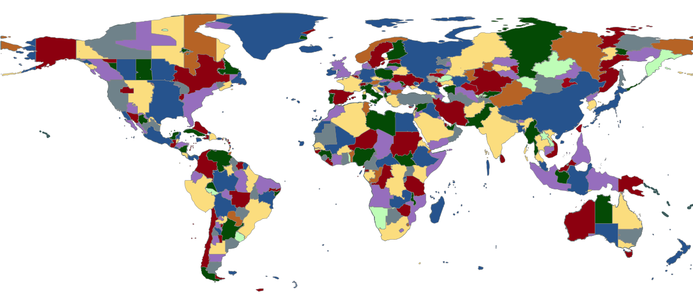

<!doctype html>
<html lang="en">

	<head>
		<meta charset="utf-8">

		<title>Time Zones in the Standard Library</title>

		
		
		<meta name="apple-mobile-web-app-capable" content="yes" />
		<meta name="apple-mobile-web-app-status-bar-style" content="black-translucent" />

		<meta name="viewport" content="width=device-width, initial-scale=1.0, maximum-scale=1.0, user-scalable=no">

		<link rel="stylesheet" href="reveal.js/css/reveal.css">
		<link rel="stylesheet" href="reveal.js/css/theme/white.css" id="theme">

	
		<link rel="stylesheet" href="css/custom.css">
	


		<!-- For syntax highlighting -->
		
		<link rel="stylesheet" href="css/xt256-pg.css">

		<!-- If the query includes 'print-pdf', use the PDF print sheet -->
		<script>
			document.write( '<link rel="stylesheet" href="reveal.js/css/print/' + ( window.location.search.match( /print-pdf/gi ) ? 'pdf' : 'paper' ) + '.css" type="text/css" media="print">' );
		</script>

		<!--[if lt IE 9]>
		<script src="reveal.js/lib/js/html5shiv.js"></script>
		<![endif]-->
	</head>

	<body>

		<div class="reveal">

			<div class="slides">

				
				<section data-markdown data-separator="^\n---\n$" data-separator-vertical="^\n--\n$" data-notes="^Note:">
					<script type="text/template">
<h1 style="font-size: 3em; text-align: center">Time Zones in the Standard Library</h1>
<div style="text-align: center">
<br/>
<br/>
<br/>
<span style="font-size: 2.5em; text-align: center">
Paul Ganssle
</span>
<br/>
<br/>

<br/>
<br/>
<br/>
  <a rel="license"
     href="http://creativecommons.org/publicdomain/zero/1.0/">
    
</a>
</div>
<br/>

Notes:

					</script>
				</section>
				
				<section data-markdown data-separator="^\n---\n$" data-separator-vertical="^\n--\n$" data-notes="^Note:">
					<script type="text/template">
# Time zones are Rules

- `UTC+1` is an offset
- `Europe/London` is a time zone

<br/>
<br/>
<br/>

<div class="fragment">

# Time zones in Python
`tzinfo` objects represent a mapping between naive times and offset information:


```python
>>> from datetime import datetime
>>> from dateutil import tz
>>> EASTERN = tz.gettz("America/New_York")
>>> print(datetime(2019, 3, 1, 12, tzinfo=EASTERN))
2019-03-01 12:00:00-05:00

>>> print(datetime(2019, 4, 1, 12, tzinfo=EASTERN))
2019-04-01 12:00:00-04:00
```

</div>

Notes:

A time zone is a mapping between the time on the wall and UTC.

This means that the offset is not sufficient.

In my opinion the datetime module gets this right, because time zones are
represented by `tzinfo` objects, which provide an interface mapping local
times to the offset information that applies at the time.

					</script>
				</section>
				
				<section data-markdown data-separator="^\n---\n$" data-separator-vertical="^\n--\n$" data-notes="^Note:">
					<script type="text/template">
# Concrete Time Zones

- UTC / Fixed Offsets <span class="fragment" style="color: green" data-fragment-index="1">✔ Added in 3.2</span>
- Local time <span class="fragment" style="color: red" data-fragment-index="2">✘</span>
- IANA Time Zones <span class="fragment" style="color: red" data-fragment-index="2">✘</span>


Notes:

The large majority of people only want to use three types of time zones. They want a UTC type, and possibly some fixed offset from UTC. They want a representation of the system local time, and they want a representation of the IANA or Olson time zones.

The UTC case in particular is both very commonly useful and easy to implement, and was finally added in Python 3.2, but the other two options have presented more significant challenges.

--

# Historical Problem: Ambiguous times

```python
>>> from datetime import datetime, timedelta
>>> from datetime import tz
>>> NYC = tz.gettz("America/New_York")

>>> dt0 = datetime(2004, 10, 31, 5, 30, tzinfo=tz.UTC)
>>> print(dt0.astimezone(NYC))
2004-10-31 01:30:00-04:00

>>> print((dt0 + timedelta(hours=1)).astimezone(NYC))
2004-10-31 01:30:00-05:00
```

<br/>
<br/>

<ul>
    <li> <b>PEP 431</b>: "Time zone support improvements" – <span style="color: red">✘</span> Withdrawn for lack of DST support</li>
<!--    <li class="fragment"><b>PEP 500</b>: "A protocol for delegating datetime methods to their tzinfo implementations" – ✘ Rejected</li> -->
    <li class="fragment" data-fragment-index="1"><b>PEP 495</b>: "Local time disambiguation" – <span style="color: green">✔</span> Accepted for Python 3.6</li>
</ul>

<div class="fragment" data-fragment-index="1">
<br/>

Introduces the `fold` attribute:

```python
>>> print(datetime(2004, 10, 31, 1, 30, tzinfo=NYC))
2004-10-31 01:30:00-04:00

>>> print(datetime(2004, 10, 31, 1, 30, fold=1, tzinfo=NYC))
2004-10-31 01:30:00-05:00
```

</div>


Notes:

When people started to look into the possibility of implementing other concrete time zone types, there was one major hitch, which is that Python had no support for handling ambiguous datetimes. Ambiguous datetimes occur when a time zone's offset shifts backwards, for example during a transition from daylight saving time to standard time. In the example here, the local time 1:30 occurs twice in the Eastern time zone.

This is a problem, because if you'll recall, Python's time zone model is that `tzinfo` is a mapping between the naive portion of the datetime and its offset information, but in this case there are *two* wall times distinguished *only* by their offset information!

Having no solution to this led to the withdrawal of PEP 431. This problem was, however, fixed in Python 3.6 with the acceptance of PEP 495, which adds a `fold` attribute to `datetime` to distinguish the cases. This is why in this example, `dateutil` is able to correctly distinguish between the DST and STD times.

					</script>
				</section>
				
				<section data-markdown data-separator="^\n---\n$" data-separator-vertical="^\n--\n$" data-notes="^Note:">
					<script type="text/template">
# IANA Time Zones
- Provides historical time zone information
- Standard open source (public domain) source for time zone information
- Shipped with many operating systems
- Source for `dateutil` and `pytz`'s data.
- 2-21 releases per year (average 9)
<br/>


Notes:

So now that we have solved the issue of ambiguous datetimes, it is now possible to make a *correct* implementation of concrete time zones, and the most obvious candidate here is to add support for the zoneinfo files provided by the IANA time zone database, also called the Olson database or tzdb.

This is an open source project that maintains historical time zone information. Transition information is compiled to a binary `tzfile`, and this is shipped with most operating systems.

--

# Data sources

## System

**Pros:**

- Use normal operating system update mechanisms
- Update cadence is independent of CPython's updates
- Uses the same data as other applications

**Cons:**

- Not guaranteed to exist (not officially supported on Windows *yet*)
- Less control for programmers

<br/>
<br/>

<div class="fragment">

## PyPI package

**Pros:**

- Guaranteed on all platforms
- Update cadence is mostly independent of CPython

**Cons:**

- Requires either a dependency or a mechanism for regular updates
- Python-specific time zone data not managed by the system

</div>

--

# `tzfile(5)` and DST offset

**From `man tzfile(5)`**:

> * tzh_typecnt ttinfo entries, each defined as follows:
>   ```
>   struct ttinfo {
>        int32_t        tt_gmtoff;
>        unsigned char  tt_isdst;
>        unsigned char  tt_abbrind;
>   };
>   ```

<br/>

... but `tzinfo.dst` returns a `datetime.timedelta` with the *amount* of daylight saving time offset, not a boolean.

<br/>
<div class="fragment">

## Possible solutions

<table>
<tr>
<td>

- **Heuristics**
    - Works with all current time zones
    - `pytz` and `dateutil` use this strategy
    - Not guaranteed to work for future zones

</td>
<td>

- **Custom compiler for tzdata**
    - Guaranteed to fix this problem
    - May be more memory-efficient
    - Rules out using system time zone database
    - Requires ongoing maintenance

</td>
</tr>
</table>
</div>

Notes:

Unfortunately, one problem with using the compiled binary outputs provided by the system is that for each transition, they only contain the UTC offset, the abbreviation and *whether or not an offset is a DST offset*, but Python is expecting `tzinfo` to know the *amount* of DST offset. This information is in the tz database source files, but is lost during compilation.

`pytz` and `dateutil` use heuristics to detect this successfully in all current cases, but it's possible that those heuristics will fail with future time zone rule changes.

One option that can guarantee that the problem is fixed is to write a custom compiler to translate the tzdata into a format that preserves this information. This would unfortunately mean that we would be unable to use the system time zone information.

Another problem with the custom compiler is that this would require ongoing maintenance to transpile everything into our own time zone database. Java does this, and they frequently have problems where something breaks their compiler, and users on old versions need to use custom backwards-compatibility `tzdata` tarballs even after the compiler fix comes out.

--

# Proposal

<br/>

1. **Support `tzfile`**: On balance, heuristics should be "good enough"
2. **Use system data with fallback to PyPI package**
3. **Enable configuration**
    - `PYTHONTZPATH` analogous to `PYTHONPATH`
    - `datetime.tzpath` analogous to `sys.tzpath`
    - Option to explicitly specify a data source

<br/>
<br/>

```python
class zoneinfo:
    def __init__(self, tzkey, *, data_source=None):
        ...

    @classmethod
    def fromfile(self, tzfile, tzkey):
        ...
```

<br/>
<br/>

**Should use a PEP**: Many design decisions that need to be documented.

					</script>
				</section>
				
				<section data-markdown data-separator="^\n---\n$" data-separator-vertical="^\n--\n$" data-notes="^Note:">
					<script type="text/template">
# Local zone

Some operations treat naive timezones as local times:

```python
>>> from datetime import datetime, timezone
>>> dt = datetime(2020, 1, 1, 12)
>>> dt.astimezone(timezone.utc)
2020-01-01 17:00:00+00:00
```

<br/>

But others do not:

```python
>>> datetime(2020, 1, 1, 12) - datetime(2020, 1, 1, tzinfo=timezone.utc)
Traceback (most recent call last):
  File "<stdin>", line 1, in <module>
TypeError: can't subtract offset-naive and offset-aware datetimes
```

<br/>

And the offset and `tzname` information are not accessible:

```python
>>> print(datetime(2020, 1, 1).utcoffset())
None
>>> print(datetime(2020, 1, 1).tzname())
None
>>> datetime(2020, 1, 1).strftime("%Z%z")
''
```

<br/>

--

# Local zone from `time`

`dateutil` provides `tzlocal` that is a wrapper around the `time` module:

```python >>> from dateutil import tz
>>> dt = datetime(2020, 1, 1, tzinfo=tz.tzlocal())
>>> dt.strftime("%Z%z")
'EST-0500'
```

<br/>
<br/>

Uses:

- `time.tzname` for abbreviations
- `time.timezone` and `time.altzone` for offsets
- `time.localtime` for the mapping

--

## Changing system time

1. Requires `tzset` to be called:

```python
>>> import time, os
>>> os.environ["TZ"] = "America/Los_Angeles"
>>> datetime(2020, 1, 1, tzinfo=tz.tzlocal()).strftime("%Z%z")
'EST-0500'
>>> time.tzset()
'PST-0800'
```

<br/>

2. Doesn't work at *all* on Windows (no `tzset`)

<br/>
<br/>

3. Makes a *single* "local time" object implausible without mutating existing datetimes

<br/>
<br/>

4. Mutates existing datetimes *anyway*:

```python
>>> dt = datetime(2019, 3, 15, tzinfo=tz.tzlocal())
>>> dt.strftime("%Z%z")
'EDT-0400'
>>> os.environ["TZ"] = "UTC"
>>> time.tzset()
>>> dt.strftime("%Z%z")
'EST-0500'
```

--

# Possible Options

1. No support for changing the system time zone during a Python run

2. New implementation not using system calls

3. Allow datetime offsets to change

**Suggestion**: Needs one or more PEPs

					</script>
				</section>
				
				<section data-markdown data-separator="^\n---\n$" data-separator-vertical="^\n--\n$" data-notes="^Note:">
					<script type="text/template">
<div style="display: flex">
<div>

<h1><u>Summary</u></h1>
<br/>

### Local zones

**Question**: How to handle time zone changes during a Python run?

- No support

- Allow datetime offsets to change

- Re-implement, avoiding system calls

</div>

<div style="flex-grow: 1"></div>


<br/>
<br/>
</div>

### IANA Zones

**Proposal**:

- Support `tzfile` and use heuristics to solve DST problem

- Data comes from the system, fallback to PyPI package ("`ensuretzdata`")

- Write a PEP to document the trade-offs

**Question**: How to ensure timely updates of PyPI package?

					</script>
				</section>
				

			</div>

<div class="sbcontainer">
    
    
    
</div>


		</div>

		<script src="reveal.js/lib/js/head.min.js"></script>
		<script src="reveal.js/js/reveal.js"></script>


		<script>

			// Full list of configuration options available here:
			// https://github.com/hakimel/reveal.js#configuration
			Reveal.initialize({
				controls: true,
				progress: true,
				history: true,
				center: true,

				theme: Reveal.getQueryHash().theme, // available themes are in /css/theme
				transition: 'linear', // default/cube/page/concave/zoom/linear/fade/none

				
					
						// Reveal options generated from mapping
						
							width: "95%",
						
							height: "95%",
						
					
				

				// Optional libraries used to extend on reveal.js
				dependencies: [
					{ src: 'reveal.js/lib/js/classList.js', condition: function() { return !document.body.classList; } },
					{ src: 'reveal.js/plugin/markdown/marked.js', condition: function() { return !!document.querySelector( '[data-markdown]' ); } },
					{ src: 'reveal.js/plugin/markdown/markdown.js', condition: function() { return !!document.querySelector( '[data-markdown]' ); } },
					{ src: 'reveal.js/plugin/highlight/highlight.js', async: true, callback: function() { hljs.initHighlightingOnLoad(); } },
					{ src: 'reveal.js/plugin/zoom-js/zoom.js', async: true, condition: function() { return !!document.body.classList; } },
					
					{ src: 'reveal.js/plugin/notes/notes.js', async: true, condition: function() { return !!document.body.classList; } }
					
					
				]
			});

		</script>

	</body>
</html>
